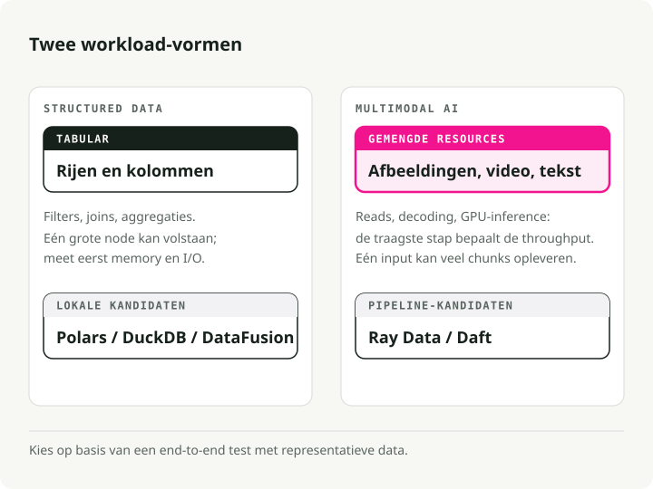
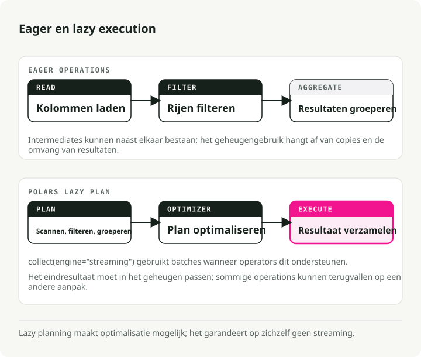
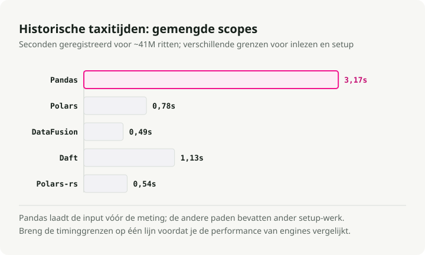
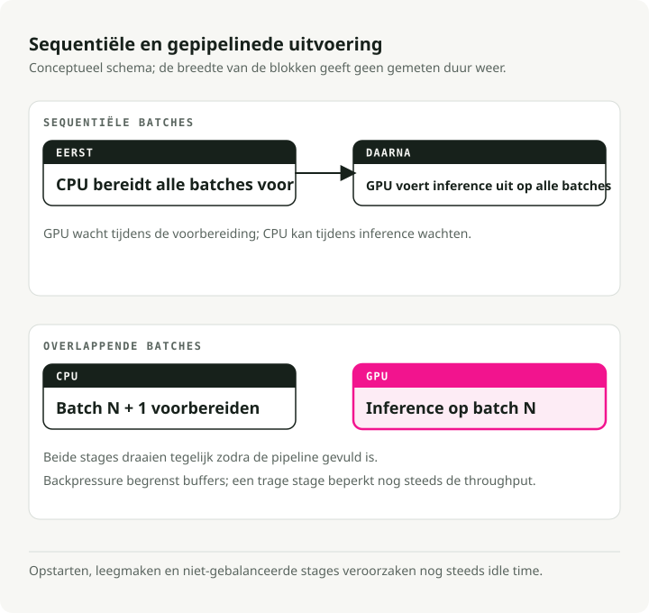
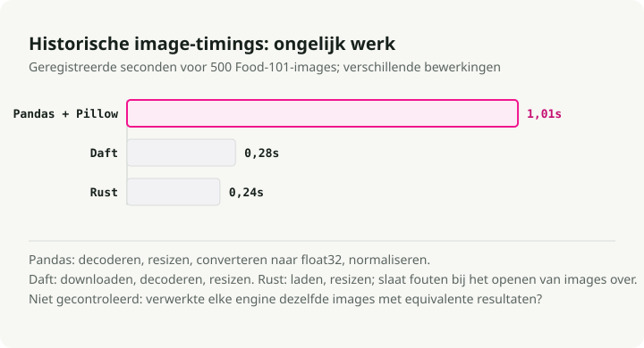
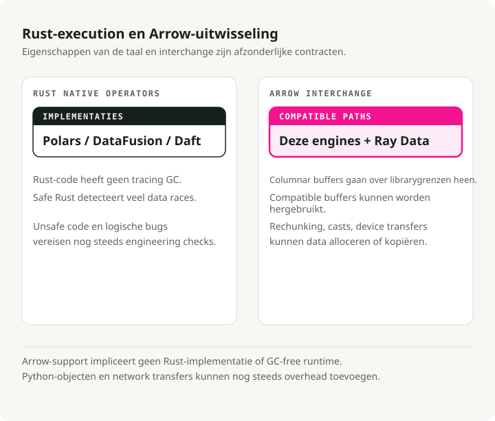
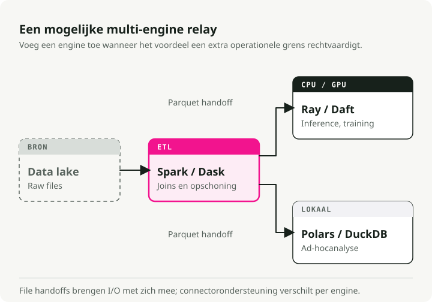
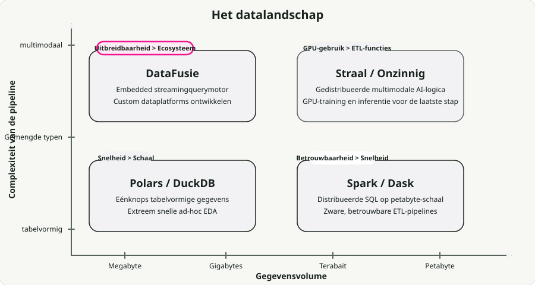

Automatische vertaling
Dit artikel is automatisch vertaald vanuit de oorspronkelijke Engelse versie.
Vergelijking van moderne dataverwerkingseenheden: Polars, DataFusion, Daft, Ray Data, Pandas en Spark
Jarenlang werd tabulaire verwerking in geheugen uitgevoerd door Pandas, terwijl Apache Spark verantwoordelijk was voor gedistribueerde verwerking. Deze indeling werkte goed zolang de gegevens gestructureerd waren.
Tegenwoordig zijn werklasten echter niet altijd gestructureerd. Pipelines voor afbeeldingen, audio en video staan nu naast de tabulaire pipelines, en wanneer GPU-inferentie wordt gebruikt, worden de garbage collection van de JVM en de GIL van Python geen irritaties meer, maar vormen ze juist een bottleneck. Dit is een belangrijke reden waarom er een nieuwe generatie engineën is ontstaan die zijn gebouwd op Rust en Apache Arrow.
In het afgelopen jaar heb ik de meeste van mijn single-node-pipelines overgezet naar Polars, en ik wilde graag zien hoe het daadwerkelijk presteert ten opzichte van de andere nieuwe engineën. Daarom heb ik Polars, DataFusion, Daft, Ray Data en Spark getest op echte datasets — taxiritdata uit NYC voor de tabulaire gegevens en Food-101-afbeeldingen voor de multimodale gegevens.
Alle code bevindt zich in de repository engine-comparison-demo. Kloon het en voer de benchmarks uit op uw eigen hardware — uw resultaten zullen verschillen van de mijne, en dat is precies het doel.
TL;DR: Op de voor marketing geschikte benchmarks behalen Rust-native engines een versnelling van 94 keer ten opzichte van Pandas op één node. Bij echte werklasten zie je een iets minder grote, maar wel consistente verbetering – zowel Polars als DataFusion vormen goede standaardopties. Voor multimodale pipelines werken gepipelde engines zoals Ray Data en Daft tot 18 keer sneller dan Spark, omdat ze de GPUs daadwerkelijk bezig houden. Er is geen algemeen winnaar; de juiste keuze hangt af van je gegevens, schaal en of GPUs worden gebruikt.
Typen dataverwerkingswerklasten
Engines zijn gespecialiseerd, dus de eerste vraag die beantwoord moet worden, is wat voor type werklast je eigenlijk hebt. De grootste indeling is tussen gestructureerde en multimodale data.

Gestructureerde/tabulaire gegevens. Filteren, aggregeren, koppelen. Afhankelijk van de CPU, meestal in geheugen. Een groot deel van deze werkzaamheden wordt uitgevoerd op gedistribueerde clusters die oorspronkelijk helemaal niet gedistribueerd hoefden te worden — ongeveer 90% van de query’s verwerkt minder dan 1 TB aan gegevens, wat tegenwoordig gemakkelijk op één enkele machine kan draaien.
Multimodale AI. Afbeeldingen, audio, video. Op het gebied van inferentie is de GPU cruciaal, maar het voorverwerken met de CPU is vaak de beperkende factor. Dieplerenmodellen verwerken gegevens sneller dan CPUs ze kunnen decoderen, dus op een standaard g6.xlarge (4 CPUs per GPU): de benutting van de GPU daalt onder de 20%. De hele pipeline wordt uiteindelijk beperkt door de snelheid waarmee gegevens aan de GPU kunnen worden toegevoegd.
De nieuwe engines richten zich op beide aspecten. Rust zorgt voor snelheid, Arrow maakt zero-copy-data‑deling tussen processen mogelijk, en stream‑uitvoering stelt ze in staat om datasets te verwerken die groter zijn dan de RAM.
Deel 1: Verwerking op één node
Het bottleneck van Pandas is geen bug, maar eerder het ontwerp. Pandas laadt bestanden gretig in de RAM, kopieert tussentijdse gegevens bij bijna elke operatie, en blijft vanwege de GIL beperkt tot één thread. In de PDS-H benchmarktests Bij een schaalfactor van 10 duurt het voor Pandas ongeveer 365 seconden om een standaardset aan queries af te ronden. De streamengine van Polars voltooit dezelfde taak in 3,89 seconden — ongeveer 94 keer sneller.

Polars: Verwerking van tabellair data
Polars heeft Pandas vervangen als standaard voor serieuze lokale ETL-processen bij veel teams met wie ik heb gesproken. Het is geschreven in Rust en maakt gebruik van lazige uitvoering: in plaats van elke regel zodra deze binnenkomt te verwerken, wordt eerst een queryplan opgesteld, geoptimaliseerd (predicate pushdown, projection pruning, column pruning), waarna de uitvoering in stromende batches over alle CPU-kernen plaatsvindt.
De kloof wordt groter naarmate de hoeveelheid gegevens toeneemt. Bij Schaalfactor 100 (~100 GB), De streamengine van Polars voltooide de verwerking in 23,94 seconden, vergeleken met 152,27 seconden voor diens eigen in-memory engine — ongeveer 6 keer sneller, zelfs bij gegevens die groter zijn dan het RAM-geheugen.
Vanuit engine_comparison_examples.ipynb:
import polars as pl
# scan_parquet reads only the schema — no data loaded yet
q = (
pl.scan_parquet("yellow_tripdata_2024-01.parquet")
.filter(
(pl.col("trip_distance") > 5.0)
& (pl.col("total_amount") > 30.0)
)
.group_by("payment_type")
.agg(
pl.col("total_amount").mean().alias("avg_fare"),
pl.col("trip_distance").mean().alias("avg_distance"),
pl.len().alias("trip_count"),
)
)
# The entire plan is optimized and executed here, in parallel
result = q.collect()
Het verschil met Pandas ligt niet in de API, maar in de architectuur. Polars bouwt eerst het plan op en optimaliseert de hele pipeline voordat er contact wordt gemaakt met de gegevens. filter wordt doorgegeven aan de Parquet-lezer, waardoor hele rijgroepen worden overgeslagen. Alleen de kolommen die in de query worden verwezen naar, worden van de schijf gehaald. Pandas kan dit niet — elke regel wordt uitgevoerd zodra deze is geanalyseerd en tussentijdse kopieën belanden overal.
Apache DataFusion: Een uitbreidbare query-engine
Terwijl Polars een bibliotheek is die je rechtstreeks gebruikt, DataFusion is de engine waarop andere engines worden gebouwd. Het zorgt voor de stroomvoorziening InfluxDB 3.0, GreptimeDB, en die van Apple Comet Spark-versneller.
In november 2024 werd DataFusion de De snelste enkelvoudige node-engine voor het queryen van Parquet-bestanden in ClickBench, voorop vergeleken met DuckDB, chDB en ClickHouse op dezelfde hardware. Het Embucket-team voerde later tests uit TPC-H met een schaalfactor van 1000 (~1 TB) op één enkele node Daarnaast is dit een nuttig getal om in gedachten te houden wanneer iemand zegt dat hij of zij een cluster nodig heeft. engine_comparison_examples.ipynb:
from datafusion import SessionContext
ctx = SessionContext()
ctx.register_parquet("taxi", "yellow_tripdata_2024-01.parquet")
# SQL executed directly against Parquet — no intermediate copies
df = ctx.sql("""
SELECT payment_type,
COUNT(*) AS trip_count,
AVG(trip_distance) AS avg_distance,
AVG(total_amount) AS avg_fare
FROM taxi
WHERE trip_distance > 5.0 AND total_amount > 30.0
GROUP BY payment_type
ORDER BY trip_count DESC
""")
result = df.to_pandas()
De sterke kant van DataFusion is zijn moduleerbaarheid. De extensie-API’s omvatten aangepaste catalogi, tabelproviders, optimalisatierules en uitvoeringsplannen; daardoor komen ze altijd naar voren wanneer iemand een aangepaste dataplatform bouwt of een query-engine in zijn eigen product integreert.
Daft: Multimodale gegevensverwerking
Idioot het is degene die multimodale gegevens serieus neemt. Afbeeldingen, audio, video en embeddings – dit zijn echte typen in de DataFrame, geen ondoorzichtige bytes. Pandas behandelt een afbeelding als een bytearray, Spark serialiseert deze via de JVM, maar Daft beschikt over native Rust-expressies voor het decoderen van afbeeldingen, het ophalen van URLs en het genereren van tensors, zonder dat er een Python-lus tussen zit. engine_comparison_examples.ipynb:
import daft
df = daft.read_parquet("yellow_tripdata_2024-01.parquet")
result = (
df.where(
(daft.col("trip_distance") > 5.0)
& (daft.col("total_amount") > 30.0)
)
.groupby("payment_type")
.agg(
daft.col("total_amount").mean().alias("avg_fare"),
daft.col("trip_distance").mean().alias("avg_distance"),
daft.col("trip_distance").count().alias("trip_count"),
)
.collect()
)
De API zal vertrouwd aanvoelen als je kennis hebt van Pandas, maar de engine is dezelfde Rust + Arrow-stack die je ook vindt in Polars en DataFusion. Daft komt echt van pas wanneer de “rows” in je DataFrame bestaan uit afbeeldingen, PDF’s of tensors.
Benchmark: Prestaties op één node
Ik heb alle vier de engines, plus het native Rust via Polars-rs, getest op ongeveer 41 miljoen NYC-gele taxiritten voor het hele jaar 2024. De volledige resultaten staan in de demo-repo:

Op deze grootte (~660 MB Parquet) werkt elke moderne engine zeer snel. Het cijfer van 94x voor Polars ten opzichte van Pandas komt voort uit PDS-H, een synthetische analytische benchmark — bij mijn werkload met 41 miljoen rijen zag ik inderdaad een consistente verbetering ten opzichte van Pandas, maar zeker niet 94x. Het interessantere resultaat is dat Polars, DataFusion, Daft en pure Rust via Polars-rs op deze werkload allemaal rond dezelfde prestatieniveaus liggen. DataFusion heeft een lichte voorsprong wat betreft de totale verwerkingstijd. Polars is het gemakkelijkst om mee te werken en een solide alomtegenwoordige optie.
Deel 2: Omgaan met multimodale gegevens
Tabulaire ETL-procedures verkleinen meestal de hoeveelheid gegevens: filteren, aggregeren en minder opslaan dan er gelezen wordt. Multimodale AI-pipelines doen juist het tegenovergestelde. Eén document kan zich opdelen in tientallen tekstfragmenten en embeddingsvectoren.
Spark behandelt afbeeldingen en audio als binaire blobs. Om ermee te werken in Python moet men eerst vanuit de JVM naar Python gaan via Py4J, vervolgens verwerking uitvoeren met Pillow of OpenCV, en daarna opnieuw serialiseren. Deze heen-en-weerbeweging neemt een groot deel in beslag van de totale verwerkingstijd bij veel echte werkloads.
Pipelined uitvoering en GPU-utilisatie
Spark paralleliseert de partitions over meerdere cores, maar het nadeel zit hem in zijn op stadia gebaseerde (bulk-synchrone) uitvoeringsmodel. Binnen één enkele taak worden alle stappen (downloaden, decoderen, classificeren) sequentieel uitgevoerd op één core, zonder sprake te zijn van asynchrone overlappende processen. Bovendien moet elke taak binnen een stadium voltooid zijn voordat het volgende stadium kan beginnen. GPUs blijven onbenut terwijl CPUs de gegevens voorverwerken; CPUs blijven onbenut terwijl GPUs inferentie uitvoeren. Elk stadium genereert zijn eigen uitvoer al voordat het volgende stadium start, waardoor er bovendien nog eens druk op het geheugen komt te staan.

Gepipelde uitvoering is de alternatieve aanpak. In plaats van de verschillende stappen achter elkaar uit te voeren, overlapt de engine I/O-opdrachten, CPU-verwerking en GPU-inferentie, zodat alleen het langzaamste onderdeel op een gegeven moment moet wachten.
Benchmark: Afbeeldingsverwerking
Ik heb de afbeeldingsverwerking getest met 500 echte fotografische afbeeldingen uit de Food-101-dataset. Resultaten uit de demo-repo:

Polars en DataFusion verschijnen hier niet omdat ze geen geïntegreerde afbeeldingsoperaties hebben — voor afbeeldingsverwerking moet men terugvallen op sequentiële Python-code, waardoor een eerlijke vergelijking niet mogelijk is. De cijfers zijn duidelijk: de geïntegreerde Rust-afbeeldingsoperaties van Daft zijn 3,6x sneller dan Pandas + Pillow, en puur Rust is 4,2x sneller dan Pandas in het hele proces.
Deel 3: Gedeeld verwerken
Zodra één enkele machine niet voldoende is, moet je beslissen hoe je de werklast verdeelt. Hier beginnen de architectonische verschillen tussen de verschillende engines echt van belang te worden.
Apache Spark
Spark blijft mijn eerste keuze wanneer het gaat om tabulaire ETL-opdrachten op petabyte-schaal waarbij er veel ge Shuffle-operaties nodig zijn. De fouttolerantie dankzij RDD-lineage werkt goed, het ecosysteem is enorm (Databricks, EMR), en multi-TB joins zijn een bekend fenomeen. Bij AI-workloads daalt de prestatie echter sterk. Taken worden gepland op JVM-executoren die geen kennis hebben van GPUs, waardoor deze nutteloos blijven staan terwijl er CPU-preprocessing plaatsvindt. distributed_spark.ipynb:
from pyspark.sql import SparkSession
from pyspark.sql import functions as F
spark = SparkSession.builder \
.appName("TaxiETL") \
.config("spark.sql.adaptive.enabled", "true") \
.getOrCreate()
orders = spark.read.parquet("s3a://lake/taxi/*.parquet")
zones = spark.read.csv("s3a://lake/taxi_zones.csv", header=True)
# Spark excels at this: joining massive tables with a shuffle
result = (
orders
.filter(F.col("trip_distance") > 5.0)
.join(zones, orders.PULocationID == zones.LocationID, "inner")
.groupBy("Borough")
.agg(
F.sum("total_amount").alias("total_revenue"),
F.avg("total_amount").alias("avg_fare"),
)
.orderBy(F.desc("total_revenue"))
)
Ray Data: GPU-gebruik
Ray Data is ontworpen rondom AI-workloads. In plaats van de stage-barrières van Spark maakt het gebruik van een streammodel dat de GPUs van stroom voorziet. De functie die dit mogelijk maakt, is gemengde resourcenscheduling: je kunt aangeven dat één actor “1 GPU, 4 CPUs” wil en een andere alleen CPUs, waarna Ray de rest regelt.
Amazon meldt dat er besparing wordt behaald meer dan 120 miljoen dollar per jaar door specifieke werklasten van Spark naar Ray te verplaatsen. Hun PoC-cijfers lieten een kostenefficiëntie zien die 91% beter was en een hoeveelheid gegevens per uur die 13x hoger lag; in de productieomgeving bedroeg de kostenefficiëntie per GiB aan S3-invoer 82% beter.
import ray
ray.init()
ds = ray.data.read_images("s3://my-bucket/food101/")
class ImageClassifier:
def __init__(self):
import torch
from torchvision.models import resnet18, ResNet18_Weights
self.model = resnet18(weights=ResNet18_Weights.DEFAULT).cuda()
self.model.eval()
self.preprocess = ResNet18_Weights.DEFAULT.transforms()
def __call__(self, batch):
import torch
tensors = torch.stack([
self.preprocess(img) for img in batch["image"]
]).cuda()
with torch.no_grad():
preds = self.model(tensors)
return {
"prediction": preds.argmax(dim=1).cpu().numpy(),
"confidence": preds.max(dim=1).values.cpu().numpy(),
}
# ActorPoolStrategy creates persistent GPU workers
predictions = ds.map_batches(
ImageClassifier,
compute=ray.data.ActorPoolStrategy(size=4),
num_gpus=1,
batch_size=64,
)
predictions.write_parquet("s3://output/predictions/")
Een detail dat het waard is om te weten: naarmate er meer CPUs per GPU worden toegevoegd, schaalt Ray Data mee, terwijl andere engines op hun niveau blijven steken. In De benchmarks van Anyscale, door over te gaan van een verhouding van 4:1 naar 32:1 tussen CPU en GPU, werd er een drievoudige versnelling behaald bij het voorspellen van afbeeldingen, omdat de CPU-processoren eindelijk gelijk opgingen met de GPU. Motor van de vloot: één Swordfish-werksterker per node, waarbij Flotilla bovenop zit en de planning op clusterniveau verzorgt. Swordfish handelt de lokale uitvoering in Rust en de I/O-pijpleidingen af door middel van streamen in kleine batches, zodat elke node bezig blijft zonder te hoeven wachten op het volgende stadium.
Bij vier multimodale werklasten leverde Daft met Flotilla resultaten op 2–18 keer sneller dan Spark. Bij de zwaarste taak (video-objectdetectie met YOLO11n) duurde Spark meer dan 3,5 uur, terwijl Daft de taak in minder dan 12 minuten afhandelde — een verschil van 18 keer, voornamelijk omdat Spark die tijd besteedt aan serialisatie en stage-barrières.
Eén voorzorgsmaatregel: Anyscale, het bedrijf achter Ray, heeft gepubliceerd hun eigen benchmarks Er wordt getoond hoe Ray Data de kloof verkleint of zelfs wegneemt op instellingen met hoge CPU-belasting door middel van handmatige afstemming. Op dit moment wisselen deze twee methoden elk kwartaal van rol. distributed_daft.ipynb:
import daft
from daft import col
# Daft's Flotilla engine distributes work across the cluster
df = daft.read_parquet("s3://data-lake/pdf_metadata/*.parquet")
# Download PDFs — Daft parallelizes downloads in Rust
df = df.with_column("pdf_bytes", col("pdf_url").url.download())
# Define a GPU UDF for embedding generation
@daft.udf(return_dtype=daft.DataType.list(daft.DataType.float32()))
class TextEmbedder:
def __init__(self):
from sentence_transformers import SentenceTransformer
self.model = SentenceTransformer("all-MiniLM-L6-v2", device="cuda")
def __call__(self, text_col):
texts = text_col.to_pylist()
embeddings = self.model.encode(texts, batch_size=32)
return [emb.tolist() for emb in embeddings]
# Daft schedules CPU downloads and GPU embeddings simultaneously
df = df.with_column("embedding", TextEmbedder(col("text")))
df.write_parquet("s3://output/embeddings/")
Gedeeld head-to-head
| Functie | Spark | Ray Data | |
|---|---|---|---|
| Uitvoermodel | Taak-per-core, gebaseerd op partities | Streamingtaken en actoren | Zwaardvis per node, stromende batches |
| Sterktepunten | Grote schaal SQL/ETL, fouttolerantie | Heterogene rekenkracht, verzadiging van GPU’s | Multimodale pijplijnen met beperkte geheugengebruik |
| GPU-gebruik | Slecht (fasegebonden, geen overlapping van CPU/GPU) | Uitstekend (expliciete toewijzing van resources) | Uitstekend (asynchrone I/O-berekeningspipelining) |
| Afstemkosten | Hogelijk (geheugen van de uitvoerder, cores, partities) | Middelgroot (batchgrootte, objectopslag) | Laag (de motor beheert de resources) |
| Ideaal voor | Petabyte-tabellair ETL | Training/inferentie met een combinatie van CPU+GPU | Multimodale dataloading voor PyTorch |
Deel 4: De rol van Rust en Arrow
Onder het perspectief van de concurrentie is de convergentie het interessantere verhaal. Polars, Daft, DataFusion en de kern van Ray delen allemaal dezelfde basis: Apache Arrow Voor het in-memory formaat en Rust voor de parallelle uitvoering.

Dat is niet zomaar architectonische netheid. De Arrow PyCapsule-interface (__arrow_c_stream__ Het protocol maakt het mogelijk om gegevens zonder serialisatie tussen engines uit te wisselen: voer berekeningen uit in DataFusion en stuur het resultaat kosteloos door naar Polars of PyArrow; voer multimodale voorverwerking uit in Daft en voeg de Arrow-batches rechtstreeks toe aan een PyTorch DataLoader.
from datafusion import SessionContext
import polars as pl
# Compute in DataFusion (Rust-native execution)
ctx = SessionContext()
ctx.register_parquet("events", "events.parquet")
df = ctx.sql("""
SELECT user_id, COUNT(*) as event_count
FROM events WHERE event_type = 'purchase'
GROUP BY user_id HAVING COUNT(*) > 5
""")
# Zero-copy conversion to Arrow, then to Polars
arrow_table = df.to_arrow_table()
df_polars = pl.from_arrow(arrow_table)
# Continue analysis in Polars
result = df_polars.with_columns(
pl.col("event_count").rank().alias("rank")
).sort("rank")
Waarom dan Rust in plaats van de JVM?
-
Geen pauzes door garbage collection. Eigendomsmodellen en lenen vervangen de GC, waardoor er geen ‘stop-the-world’-pauzes en geen onvoorspelbare pieken in de vertraging optreden. De OOM-fouten die zich op grote schaal voordoen in JVM-systemen verdwijnen grotendeels.
-
Geen extra overhead voor objectheaders. De JVM voegt 12–16 bytes aan objectheaders toe aan elk object. Bij miljarden kleine objecten vormt dit al snel een aanzienlijke geheugenbehoefte. Rust heeft hier geen last van.
-
Threadveiligheid tijdens compilatie. Het typesysteem van Rust wijst data races al af voordat het binary wordt gebouwd, zodat meerdere threads zonder de gebruikelijke subtiele concurrentieproblemen kunnen werken.
In combinatie met de kolommatige geheugenindeling van Arrow verdwijnt ook het serialisatie‑probleem dat tot 30% van de CPU-cycli kan verbruiken in legacy JVM‑stacks.

In productie ziet dit er meestal uit als een relay. Ruwe gegevens in een data lake worden gereinigd en met behulp van Spark (of Dask als je team alleen Python gebruikt) samengevoegd tot Parquet- of Delta-tabellen. Deze tabellen gaan vervolgens naar Ray Data of Daft voor de laatste stap – GPU-inferentie, generatie van embeddings en multimodale transformaties – taken waarvoor Spark oorspronkelijk niet is ontworpen. Voor ad-hoc-analyse en lokale ontwikkeling bieden Polars en DuckDB onmiddellijk feedback zonder dat er een cluster hoeft te worden opgestart.
Wat deze samenstelling mogelijk maakt, zijn open formaten: Parquet, Delta, Iceberg en Arrow. Elke engine in de stack leest en schrijft deze formaten op natieve manier, zodat de overdracht tussen verschillende stappen slechts een kwestie is van een bestandsnaam.
Samenvatting van toepassingsgebieden van de engines

| Taak | Aanbevolen tool | Afweging |
|---|---|---|
| Ad-hoc analyse op een laptop | Polars / DuckDB | Snelheid > Schaal |
| Grote schaal SQL ETL (petabyte) | Apache Spark | Betrouwbaarheid > Snelheid |
| Python-gebonden schaling | Dask | Eenvoud > Optimalisatie |
| Training van LLM’s / computervisie | Ray Data | GPU-gebruik > ETL-functies |
| Laden van multimodale gegevens | Onzinnig | Ontwikkelaarsexperiëntie > Ecosysteem |
| Het bouwen van aangepaste query-engineën | DataFusion | Uitbreidbaarheid > Ingebouwde functies |
Diagonale schaling
Lang was de keuze tussen schaalvergroting (een grotere machine) of schaaluitbreiding (meer machines). Polars Cloud er wordt iets gedaan dat zich ergens daartussen bevindt, en dat wordt diagonaal schalen genoemd: men schaalt horizontaal terwijl er gegevens uit de cloudopslag worden gelezen om de I/O-optimalisatie te bereiken, waarna het systeem samenvalt tot één grote node zodra filters en aggregaties de hoeveelheid gegevens hebben verminderd, waardoor het gehele proces van gedistribueerd shuffelen wordt vermeden.
Het tegenintuïtieve aspect is dat een grotere, duurdere instans uiteindelijk goedkoper per taak kan uitvallen, omdat deze de GPU-utilisatie hoog genoeg brengt zodat de totale uitvoeringstijd sneller afneemt dan de uurprijs stijgt.
Probeer het zelf
De demo-repository voor de companion bevat alles wat je nodig hebt om deze benchmarks na te bootsen:
# Install dependencies
uv sync
# Run the tabular benchmark (~2.9M NYC taxi trips)
uv run python -m engine_comparison.benchmarks.tabular
# Run the multimodal benchmark (500 real food photos)
uv run python -m engine_comparison.benchmarks.multimodal
# Run native Rust benchmarks (Polars-rs + image crate)
cd rust_benchmark && cargo run --release && cd ..
Het repository bevat ook notebooks voor naast elkaar geplaatste API-vergelijkingen en Docker Compose-configuraties voor lokale, gedistribueerde uitvoeringen van Spark, Ray en Daft.
Belangrijkste conclusies
-
Distributeer niet als het niet nodig is. Polars en DataFusion kunnen tot ongeveer 1 TB verwerken op één machine, met consistente versnellingen ten opzichte van Pandas (en 94x sneller bij zware analytische benchmarks zoals PDS-H). Gebruik een cluster pas wanneer je daadwerkelijk de limieten van één node hebt bereikt, en niet eerder.
-
De beperkingen van Pandas zijn architectonisch van aard. Eager execution, single-threading en tussentijdse kopieën — dit zijn bewuste ontwerpkeuzes die zich tot bottlenecken ontwikkelen zodra de data groter wordt. Lazy execution met predicate pushdown en column pruning verandert dat.
-
Pipelined execution is beter dan stage-barrières voor GPU-werk. De stages van Spark laten GPUs leegstaan terwijl CPUs de gegevens voorverwerken. Ray Data en Daft overlappen I/O-, CPU- en GPU-werk, zodat geen enkele bron wordt verspild door te wachten op de volgende fase.
-
Gebruik elke engine voor waar hij goed in is. Spark voor petabyte ETL, Polars en DuckDB voor ad-hoc analyse, Ray Data voor GPU-training pipelines, Daft voor multimodale data-loading, DataFusion voor aangepaste query-engines.
-
Rust + Arrow vormt de gedeelde basis. Het is geen toeval dat Polars, DataFusion, Daft en Ray hier allemaal samenkomen — dit elimineert GC-pauzes, overhead van cross-process serialisatie en een hele reeks concurrentieproblemen.
Als je niet weet waar je moet beginnen: gebruik Polars op één machine, en vervolgens Daft of Ray Data wanneer GPUs worden gebruikt. Spark alleen wanneer je daadwerkelijk met petabytes te maken hebt.
Referenties
Benchmarks en prestatiegegevens
- Polars PDS-H benchmarks - Polars streaming versus Pandas bij SF-10 (94x) en SF-100 (6,4x ten opzichte van in-memory) Resultaten DataFusion ClickBench (november 2024) - De snelste Parquet-queryengine voor één node Embucket: TPC-H SF-1000 op DataFusion - Volledige TPC-H op ongeveer 1 TB op één node Migration van Amazon Spark naar Ray - Besparing van $120 miljoen per jaar, 82% efficiëntie in de productiekosten Daft Flotilla-benchmarks - 2–18 keer sneller dan Spark bij multimodale werklasten Anyscale Ray versus Daft Benchmarks - Ray Data: gemiddeld een versnelling van ongeveer 30% bij multimodale taken
Motoren en frameworks
- Polars - Rust DataFrame-bibliotheek met late uitvoering Apache DataFusion - Inbedbare Rust-queryengine (GitHub)
- Idioot - Multimodaal, native gedistribueerd DataFrame Ray - Gedeeld rekenframework voor AI (Interne gegevens)
- Apache Spark - Gedeeld ETL- en SQL-engine DuckDB - Analytische SQL-engine die binnen het proces draait Dask - Parallel computing die native is voor Python
Architectuur en ecosysteem
- Polars Cloud: Diagonale schaling - Dynamische verticale/horizontale schaling Architectuur van de Daft Flotilla - Zwaardvis + gedistribueerde motor voor vlotillen Apache DataFusion Comet - Spark-accelerator die oorspronkelijk is ontwikkeld bij Apple Apache Arrow - Kolomvormig in-memory formaat (Flight RPC, PyCapsule-interface)
- InfluxDB 3.0 + DataFusion - Tijdsreeksdatabase gebouwd op DataFusion GreptimeDB - Observabiliteitsdatabase met DataFusion
Demo-repository
- Engine-vergelijking-demo - Bijbehorende code voor dit artikel: benchmarks, notebooks en Docker Compose voor Spark/Ray/Daft Logboeken van NYC-taxiritten - Gegevens van gele taxi’s van de NYC TLC (Parquet, ~2,9 miljoen rijen per maand) Dataset Food-101 - 101K voedselafbeeldingen van ETH Zurich (Bossard et al., ECCV 2014)